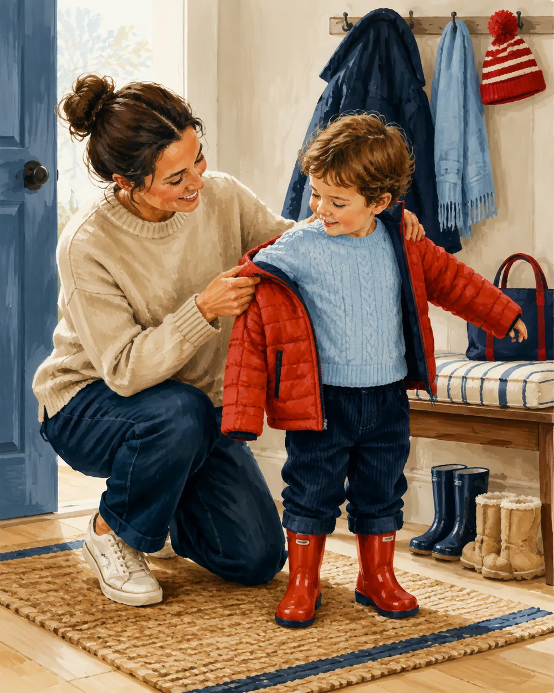

В литовском нет универсального «надеть». Есть карта тела, и каждая её зона требует своего глагола. Здесь — вся система: от корня vilk‑ до падежного управления.
Русское «надеть» — универсально: надеть шапку, пальто, носки, кольцо, ремень. Литовский так не работает. Здесь глагол выбирается не по предмету, а по характеру движения, которым предмет попадает на тело. Тело поделено на зоны, и каждая зона диктует корень.
1 · vilk‑vilkti · vilktis · apsivilktiТорс: всё, что натягивается через рукава и голову. Paltas, marškiniai, suknelė, megztinis.
2 · au‑auti · autis · apsiautiСтопа: обувь и то, что на неё. Batai, bateliai, šlepetės, kojinės.
3 · mau‑mauti · mautis · užsimautiВсё, что натягивается как чехол: kelnės, pirštinės, kojinės, žiedas.
Есть и утешение: dėti(s) законно для головы и для того, что кладётся на лицо и уши — užsidėti kepurę, skrybėlę, akinius, kaukę, ausines. То есть глагол не «плохой», у него просто узкая зона.
§ 2 · Движок
Пять форм одного корня
Каждый корень живёт в пяти состояниях. Это и есть весь механизм: выучив пять клеток для одного корня, вы автоматически получаете их для остальных шести.
Atsisegti · nusisegti.At‑ — расстегнуть, вещь остаётся на теле; nu‑ — снять совсем.
Состояние
Форма
Пример
Русский
① на другого
голый корень + Acc.
vilkti vaikui striukę
надевать на ребёнка куртку
② на себя (процесс)
возвратный ‑tis
vilktis striukę
надевать на себя, быть в процессе
③ результат
приставка ap‑ / už‑ + ‑tis
apsivilkti striukę
надеть (и всё, надел)
④ снять
приставка nu(si)‑
nusivilkti striukę
снять с себя
⑤ носить (состояние)
отдельный глагол на ‑ėti
vilkėti striukę
быть в куртке, ходить в куртке
Пятое состояние — самое непривычное. В русском «носить куртку» и «быть в куртке» выражаются одним глаголом с предлогом; в литовском это отдельная лексема с суффиксом ‑ėti, и она обозначает не движение, а положение дел. Jis vilki juodą paltą — не «он надевает», а «на нём чёрное пальто прямо сейчас».
Корень
① на другого
② на себя
③ результат
④ снять
⑤ состояние
vilk‑
vilkti
vilktis
apsivilkti
nusivilkti
vilkėti
au‑
auti
autis
apsiauti
nusiauti
avėti
mau‑
mauti
mautis
užsimauti
nusimauti
mūvėti
seg‑
segti
segtis
užsisegti / prisisegti
nusisegti / atsisegti
segėti
riš‑
rišti
rištis
užsirišti
nusirišti / atsirišti
— (nešioti)
juos‑
juosti
juostis
apsijuosti
nusijuosti
— (segėti diržą)
dė‑
dėti
dėtis
užsidėti
nusiimti
— (dėvėti, nešioti)
reng‑
rengti / aprengti
rengtis
apsirengti
nusirengti
dėvėti
Тонкость приставок
Приставка не случайна. ap‑ — «вокруг, обхватывая» (apsivilkti, apsiauti, apsijuosti, apsirengti): предмет охватывает тело. už‑ — «на, поверх, до конца» (užsidėti, užsimauti, užsisegti, užsirišti): предмет фиксируется. nu‑ — «прочь, вниз» (nusivilkti, nusiauti, nusiimti). at‑ — «обратно, разъединяя»: atsisegti расстегнуться, atsirišti развязаться, но не «снять».
Разница atsisegti / nusisegti — это разница «расстегнуть» и «отстегнуть насовсем»: atsisek striukę (расстегни куртку, она останется на тебе) против nusisek sagę (сними брошь).
Заодно о повелительном наклонении
У segti в повелительной форме исчезает g: суффикс ‑k вытесняет стоящий перед ним заднеязычный. Отсюда ✓ sek · užsisek · atsisek · nusisek, а не ✗ segk. Тот же механизм: bėgti → bėk, degti → dek, rengtis → renkis, apsirengti → apsirenk. У корней на другие согласные ничего не пропадает: vilkti → vilk, rišti → rišk, dėti → dėk, auti → auk.
§ 3 · Формы
Спряжение: три формы каждого глагола
Здесь много «бунтарей» — коротких основ с чередованием. Их немного, но они самые частотные, поэтому их проще выучить списком, чем выводить.
Глаголы движения (что делаю сейчас)
Инфинитив
Наст. (jis)
Прош. (jis)
Комментарий
vilkti
velka
vilko
чередование i → e в настоящем
auti
auna
avė
‑n‑ в настоящем, ‑v‑ в прошедшем
mauti
mauna
movė
au → o в прошедшем
segti
sega
segė
ровный, без сюрпризов
rišti
riša
rišo
ровный
juosti
juosia
juosė
смягчение в настоящем
dėti
deda
dėjo
‑d‑ появляется только в настоящем
rengti
rengia
rengė
смягчение в настоящем
imti
ima
ėmė
нужен для nusiimti
spirti
spiria
spyrė
įsispirti į basutes — сунуть ноги
mesti
meta
metė
užsimesti šaliką — накинуть
gaubti
gaubia
gaubė
apsigaubti skara — укутаться
Глаголы состояния (что на мне сейчас)
Все шесть — второго спряжения на ‑i, то есть ведут себя как turėti → turi. Это делает их предсказуемыми.
Инфинитив
Наст.
Прош.
Зона
Русский
vilkėti
vilki
vilkėjo
торс, верхняя одежда
быть одетым в
avėti
avi
avėjo
стопа
быть обутым в
mūvėti
mūvi
mūvėjo
конечности, кольцо
быть в (брюках, перчатках), носить кольцо
segėti
segi
segėjo
пристёгнутое
быть в юбке, с брошью, в фартуке
dėvėti
dėvi
dėvėjo
универсальный
носить (нейтрально и официально)
nešioti
nešioja
nešiojo
универсальный, привычка
носить регулярно, изо дня в день
Причастия — самая частая разговорная форма
В живой речи «во что человек одет» чаще всего описывают не глаголом, а действительным причастием прошедшего времени на ‑ęs / ‑usi:
apsirengęs / apsirengusi — одет(а) — Jis atėjo apsirengęs sportiškai.
apsivilkęs / apsivilkusi — в (чём-то) — Ji buvo apsivilkusi žalią paltą.
apsiavęs / apsiavusi — обут(а) — Vaikas apsiavęs guminius batus.
užsidėjęs / užsidėjusi — в шапке, в очках — Senelis užsidėjęs akinius.
apsisegusi — в юбке — Ji apsisegusi ilgą sijoną.
nusirengęs / nusiavęs — раздетый / разутый
§ 4 · Общий уровень
rengti(s): когда предмет не назван
Корень reng‑ — единственный, который работает с одеждой «вообще», без указания конкретной вещи. Он же обслуживает переодевание и раздевание.

Aprengti vaiką. Действие на другого человека — без частицы ‑si‑: aprengti, а не apsirengti.
Глагол
Формы
Значение
Пример
rengtis
rengiasi, rengėsi
одеваться (процесс)
Ji rengiasi jau pusvalandį.
apsirengti
apsirengia, apsirengė
одеться (результат)
Greitai apsirenk, vėluojame!
nusirengti
nusirengia, nusirengė
раздеться
Vaikai greitai nusirengė ir sušoko į vandenį.
persirengti
persirengia, persirengė
переодеться
Reikia persirengti po treniruotės.
išsirengti
išsirengia, išsirengė
разоблачиться донага; собраться в путь
Išsirengė iki pusės.
aprengti
aprengia, aprengė
одеть кого-то
Mama aprengė vaiką.
nurengti
nurengia, nurengė
раздеть кого-то
Nurenk kūdikį.
pasipuošti
pasipuošia, pasipuošė
нарядиться, принарядиться
Pasipuošė šventei.
apsitaisyti
apsitaiso, apsitaisė
привести себя в порядок, приодеться
Apsitaisė ir išėjo.
Важно и приятно
rengtis может брать прямое дополнение: rengtis suknelę — так же корректно, как vilktis suknelę. Ошибкой является не rengtis, а универсальное dėtis. Но apsirengti с конкретной вещью звучит менее естественно, чем apsivilkti: apsivilkti paltą — эталон.
Наречия при rengtis — очень частотная конструкция
rengtis šiltaiодеваться тепло
rengtis lengvaiодеваться легко
rengtis sportiškaiодеваться спортивно
rengtis madingaiодеваться модно
rengtis kukliaiодеваться скромно
rengtis prašmatniaiодеваться роскошно
rengtis pagal orąодеваться по погоде
rengtis sluoksniaisодеваться слоями
§ 5 · Матрица
Предмет → надеть → носить → снять
Главная таблица всей темы. Если запомнить только её — вы уже не ошибётесь.
Užsirišti batraiščius. Ботинок — apsiauti, а шнурки на нём — уже užsirišti.
Предмет
Надеть (на себя)
Носить / быть в
Снять
paltas, striukė, švarkas
apsivilkti
vilkėti, dėvėti
nusivilkti
marškiniai, megztinis
apsivilkti
vilkėti, dėvėti
nusivilkti
suknelė
apsivilkti (rengtis)
vilkėti, dėvėti
nusivilkti
kelnės, džinsai
užsimauti, apsivilkti
mūvėti, vilkėti
nusimauti, nusivilkti
sijonas
apsisegti, apsivilkti
segėti, vilkėti
nusisegti, nusivilkti
kojinės, pėdkelnės
apsiauti, užsimauti
avėti, mūvėti
nusiauti, nusimauti
batai, bateliai, aulinukai
apsiauti
avėti
nusiauti
šlepetės, basutės
apsiauti, įsispirti
avėti
nusiauti, išsispirti
pirštinės
užsimauti
mūvėti
nusimauti
kepurė, skrybėlė, beretė
užsidėti
dėvėti, nešioti
nusiimti
gobtuvas
užsidėti, užsitraukti
—
nusiimti, nusitraukti
skarelė, šalikas
užsirišti, apsirišti
nešioti, dėvėti
nusirišti
skara (шаль)
apsigaubti, užsimesti
nešioti
nusimesti
kaklaraištis
užsirišti
nešioti, ryšėti
nusirišti
diržas
apsijuosti, užsisegti
segėti, nešioti
nusijuosti, nusisegti
žiedas
užsimauti
mūvėti, nešioti
nusimauti
auskarai
įsisegti, užsisegti
segėti, nešioti
išsisegti, nusisegti
sagė (брошь)
prisisegti
segėti
nusisegti
apyrankė, grandinėlė
užsidėti, užsisegti
nešioti
nusiimti, nusisegti
akiniai
užsidėti
nešioti, dėvėti
nusiimti
laikrodis
užsidėti
nešioti
nusiimti
prijuostė (фартук)
užsirišti, apsisegti
segėti
nusirišti, nusisegti
kuprinė, rankinė
užsidėti, pasiimti
nešiotis
nusiimti, padėti
batraiščiai
užsirišti, susirišti
—
atsirišti
sagos, užtrauktukas
užsisegti
—
atsisegti
§ 6 · Стативы
dėvėti, nešioti, vilkėti, avėti, mūvėti, segėti
Все шесть переводятся на русский словом «носить», и именно поэтому их путают. Разводить их нужно по двум осям: зона тела и регистр/длительность.
Ось 1 — зона
vilkėti торс · avėti стопы · mūvėti натянутое на конечности и палец · segėti пристёгнутое. Эти четыре — точные, «анатомические».
Ось 2 — регистр
dėvėti и nešioti зон не имеют. dėvėti — нейтрально-книжное, годится для любой вещи. nešioti — разговорное, с оттенком «постоянно, привычно, изо дня в день».
Šiandien ji vilki mėlyną paltą — сегодня, сейчас, на ней. Ji nešioja mėlyną paltą — это её пальто, она в нём ходит всю зиму. Darbuotojai privalo dėvėti uniformą — так пишут в правилах.
Отдельно: nešioti сохраняет и буквальное значение «носить в руках, переносить» (nešioti vandenį), а также «износить» — nunešioti batus сносить ботинки, nudėvėti износить одежду. Прилагательное nudėvėtas — поношенный, nešiotas — б/у.
§ 7 · Падежи
Винительный, творительный и su
Тонкость, о которой почти не пишут в учебниках: глаголы состояния avėti, mūvėti, vilkėti, dėvėti исторически управляют творительным падежом, и эта форма до сих пор нормативна и звучит очень по-литовски.
Конструкция
Пример
Оттенок
Глагол + Acc.
Ji avi naujus batus. · Jis mūvi juodas kelnes.
современно, частотно, полностью нормативно
Глагол + Instr.
Ji avi naujais batais. · Jis mūvi juodomis kelnėmis.
традиционно, «книжно-народно», очень естественно
būti su + Instr.
Ji buvo su raudona suknele. · Vaikas su kepure.
разговорное, самое частое в живой речи
Причастие + Acc.
Ji apsivilkusi raudoną suknelę.
нейтрально, описание внешнего вида
Осторожно с su
Конструкция su + Instr. в живой речи повсеместна (su akiniais, su kepure, su striuke), но в письменной и официальной речи предпочтительнее глагольная: Ji vilkėjo striukę, а не Ji buvo su striuke. В школьных сочинениях учителя это правят.
Ещё одна конструкция — датив адресата при «одеть кого-то»: Apvilkau vaikui striukę (надел ребёнку куртку), Apaviau jai batus. Дательный здесь — не ошибка и не калька, а норма.